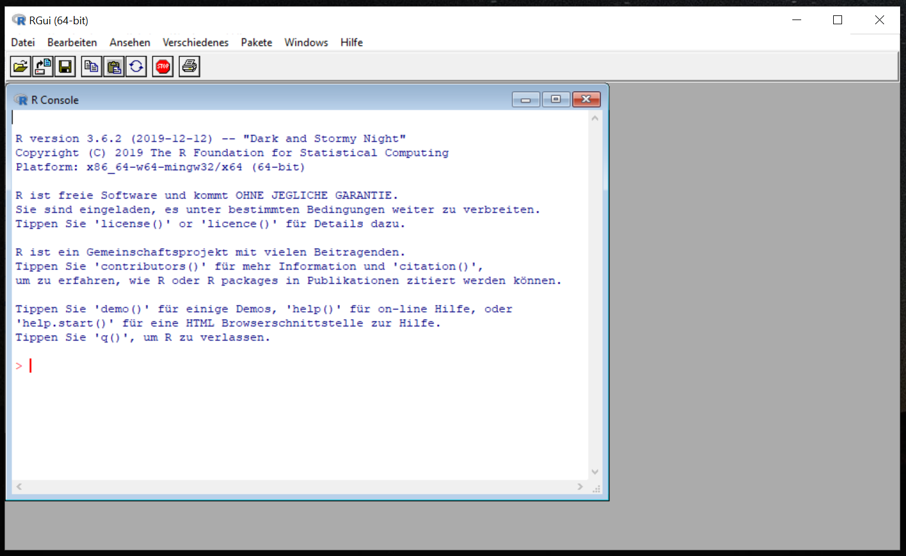

Kapitel 1 Getting started
tbc..
1.1 R in a Nutshell
tbc…
1.2 Warum R?
Traditionell wird in den Sozialwissenschaften mit SPSS oder Stata als Statistik- und Analyse-Software gearbeitet. Warum hat sich R dann als defacto Programmiersprache zur Datenanalyse entwickelt? Einige Argumente sprechen für R:
- R ist freie Software und Open Source.
- Rläuft sowohl auf Windows als auch auf Mac Os und Linux.
- R hat eine große und sehr aktive Community. Die Community stellt vielfältige Lern-Ressourcen zur Verfügung und hilft bei Problemen. Wir werden noch kennenlernen, wie wir von der Community profitieren können.
- R wird aktiv weiterentwickelt. Besonders wichtig sind dabei sogenannte Packages, die nicht nur die Arbeit erleichtern, sondern auch die Anwendung neuer Methoden ermöglichen.
Aber R muss auch erlernt werden. Und Software verunsichert uns häufig, wenn sie nicht auf einem Drag-and-Drop Prinzip basiert, sondern durch Programmiercode ausgeführt wird.
1.3 Installation von R
Bevor wir starten, müssen wir R zunächst installieren. Auf der Website des Cran-Projekts („The Comprehensive R Archive Network“) können wir R downloaden und installieren. Wir beachten einfach den Hinweisen („install R for the first time“) auf der Homepage via Cran. Wenn wir R auf unserem Computer installiert haben, dann können wir mit einem Doppelklick das Programm öffnen und in der R Console starten.
1.4 Die R Console
Die R Console erinnert etwas an Windows 98. Deshalb installieren wir auch später Rstudio, dass uns die Arbeit erleichtert und eher unserem Selbstbild als erfolgreiche Analysten entspricht. Aber erstmal gucken wir uns die Console an.

In der Console können wir direkt mit unserem Code beginnen. Um einen ersten Eindruck von R zu bekommen, halten wir uns an die alte Tradition ein Programm mit dem Ergebnis „Hello World!“ zu schreiben. Dafür nutzen wir die print() Funktion, geben in die Console print(„Hello World!“) ein und bestätigen mit Enter.
Glückwunsch, damit haben wir unseren ersten R Code geschrieben. Die Console können wir aber auch als Taschenrechner nutzen: So können wir 15 Prozent Trinkgeld von unserem 35,70 Euro Bierdeckel in einer Kneipe berechnen, indem wir einfach 0.15 * 35.70 in die Console eingeben und mit Enter bestätigen.
## [1] 5.355Das Ergebnis lautet 5,35 Euro. Falls ein Fehler auftritt, könnte dies an einem Komma , statt an einem Punkt . zur Trennung liegen.